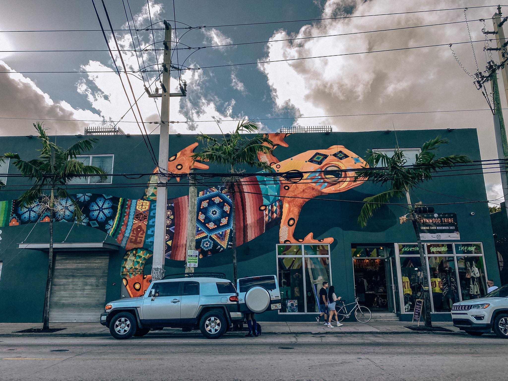
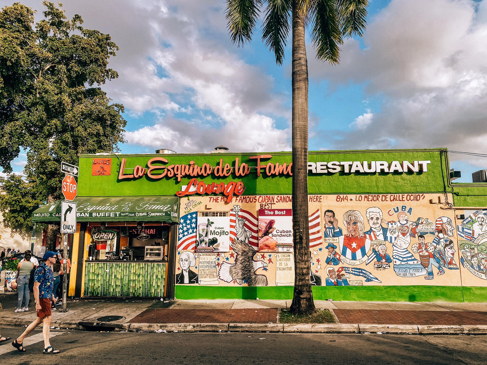

Wynwood To obecnie jedna z najmodniejszych dzielnic Miami i jeden z moich faworytów. To unikatowe na skalę światową miejsce powstało dzięki Tony’emu Goldmanowi, który to w 2009 roku postanowił zrewitalizować niegdyś zapomnianą dzielnicę i przerodził ją w światową stolicę Street Artu. Fenomen tego miejsca zaczął się od Wynwood Walls, gdzie najwięksi artyści z całego świata zajmujący się graffiti i sztuką uliczną zamienili sześć starych budynków w jedną z ważniejszych przestrzeni sztuki ulicznej na świecie
Obecnie muralami pokryte są budynki i mury w całej dzielnicy, co tworzy niesamowite wrażenie! My Wynwood odwiedziliśmy zarówno podczas pobytu w 2020, jak i pod koniec 2021 roku. Odnaleźliśmy część murali, które zachwycały nas podczas pierwszej wizyty, część została już przemalowana. Jedno jest pewne – to niesamowite miejsce i obecnie po prostu nie można nie zajrzeć do Wynwood, gdy jesteś w Miami

Little Havana to kolejny “must visit” w Miami! Niegdyś po prostu dzielnica zamieszkiwana przez klasę robotniczej, położona na zachód od centrum Miami. To miejsce, do którego w latach 60-tych masowo napływali Kubańczycy, uciekający przed przejmującym władzę na Kubie Fidelem Castro. Już wiecie, skąd właśnie taka nazwa tej dzielnicy!
Obecnie Little Havana to latynoski klimat i popularne miejsce do odwiedzenia przez turystów. Ba, dla niektórych z Was może okazać się wręcz zbyt turystyczne. Do mnie jednak ten klimat trafia – czuję tu się trochę jak w Meksyku, który uwielbiam. W Little Havana czeka na Was klimatyczna zabudowa z licznymi kawiarniami, klubami muzycznymi i sklepami, w których obsługa czasem nawet nie mówi po angielsku! Pełna kolorów, muzyki no i oczywiście kubańskiego jedzenia
